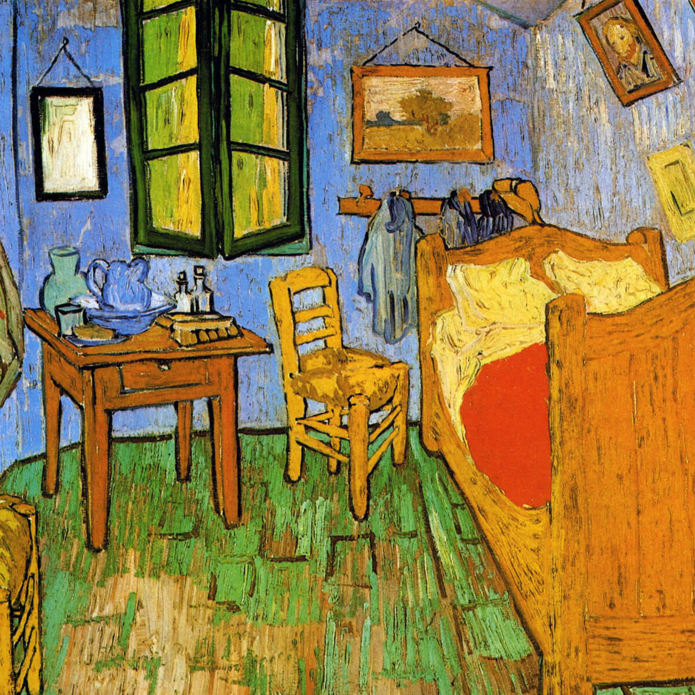
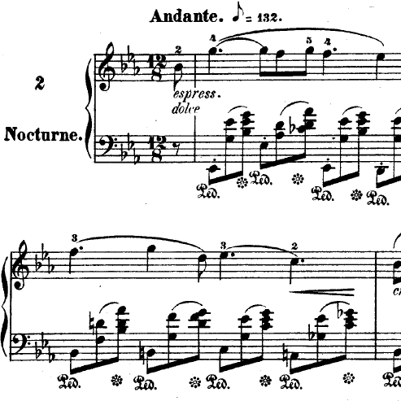

MÖBIUS
Matteo Picciolini
Matteo Picciolini
Sono Matteo, studio Fisica presso l'Università Statale di Milano. Condivido qui alcune cose che mi accadono e alcuni pensieri.
Ultimi post
-

Passione in sessione
Matteo Picciolini, 22 Aprile - 13 Giugno 2024 -
Ken ne sarà di me?
Matteo Picciolini, 21 Gennaio 2024 -
Tutto prima o poi fallisce. Ma allora perché ci muoviamo?
Testo di Matteo Picciolini, foto di Marco Leali, 23 Dicembre 2023 -
Maïti Girtanner: la musica del perdono
Matteo Picciolini, 3 Dicembre 2023 -
Giulia e Filippo: tra promessa e libertà
Matteo Picciolini, 25 Novembre 2023 -

Frédéric Chopin e il senso della sofferenza
Matteo Picciolini, 20 Novembre 2023

Passione in sessione
Matteo Picciolini, 22 Aprile - 13 Giugno 2024
Negli ultimi mesi sono stato immerso nel frenetico ritmo degli esami universitari: la sessione invernale ha invaso la mia quotidianità e scandito le giornate. Questo periodo dell'anno accademico è stato sempre di difficile gestione, perché nella ripetitività delle giornate mi è estremamente facile perdere il senso di quello che faccio e di quello che studio.

Ken ne sarà di me?
Matteo Picciolini, 21 Gennaio 2024
Una sera, circa un anno fa, davanti a una birra, in un grigio bar di Milano, un'amica ebbe il coraggio di farmi una semplice ma incisiva domanda. Le stavo raccontando alcune cose che mi erano successe: di quanto ero arrabbiato perché le cose più importanti della mia vita non andavano come volevo che andassero, e di quanto questo mi ferisse. Ero perso in mille pensieri, e accusavo di tutta la mia sofferenza dei volti precisi, delle situazioni particolari che erano diventate totalizzanti. In quel momento lei mi ha detto: Ma scusa, chi è Piccio?.
Tutto prima o poi fallisce. Ma allora perché ci muoviamo?
Testo di Matteo Picciolini, foto di Marco Leali, 23 Dicembre 2023
Due anni fa, in questo periodo, durante un direttivo CUSL, discutendo di alcune questioni circa i bilanci e l'acquisto libri per il nuovo semestre, un caro amico riportò queste parole: Caro Piccio, tutto prima o poi fallisce. La questione vera è: cosa rimane?

Maïti Girtanner: la musica del perdono
Matteo Picciolini. 3 Dicembre 2023
Mi sono imbattuto nella storia di Maïti Girtanner circa un anno fa, quando un amico, in risposta a tante mie domande personali, mi ha consigliato di leggere il libro Maïti, resistenza e perdono. Ne parlo in questo post perché in questi ultimi mesi le parole di Maïti e la sua storia mi hanno fatto molta compagnia.

Giulia e Filippo: tra promessa e libertà
Matteo Picciolini. 25 Novembre 2023
Premessa: In questo post voglio trarre alcuni spunti di giudizio dalla vicenda del brutale assassinio di Giulia Cecchettin per mano dell'ex fidanzato Filippo Turetta. Preciso che non conosco o ho mai conosciuto nè Giulia nè Filippo, per cui è evidente che il giudizio che esprimo è estremamente generale e, per certi aspetti, inadeguato.

Frédéric Chopin e il senso della sofferenza
Matteo Picciolini, 20 Novembre 2023
Entrare nel mondo di Frédéric Chopin significa immergersi in un universo di emozioni particolari,
intrise di melodia, dove ogni nota è una finestra aperta sull'anima tormentata del compositore.
Nato nel mezzo del panorama romantico del XIX secolo, Chopin ha lasciato un'impronta
indelebile nella storia della musica, trasformando le esperienze personali di una vita in composizioni.
Le sue opere riflettono le sfumature della sua stessa esistenza, catturandone al contempo
le gioie effimere e le profonde tristezze.
Attraverso la tastiera del pianoforte, Chopin dipinge paesaggi sonori intrisi di passione e dell'incessante richiamo alla sua amata Polonia.
In questo post racconto dell'improbabile amicizia nata con Frédéric.